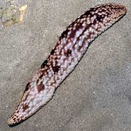
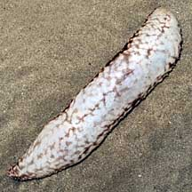
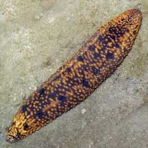
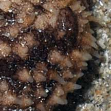
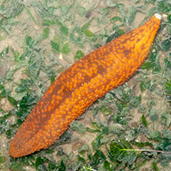
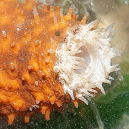
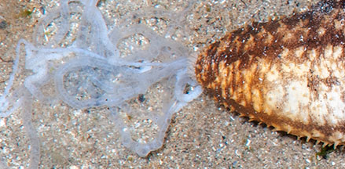
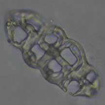

|
|
| sea cucumbers text index | photo index |
| Phylum Echinodermata > Class Holothuroidea |
| Remarkable
sea cucumber Holothuria notabilis Family Holothuriidae updated Apr 2020 Where seen? This large long smooth sea cucumber with dark markings is sometimes seen buried near seagrasses on some of our shores. Those seen were buried in the sand near the low water mark, with only a tip of the body sticking out. Elsewhere, it prefers lagoons and seagrass meadows with sandy ground and can be found in high densities. Features: 10-12cm long. Body soft cylindrical and tapered at the back side. Irregular darker blotches, about 8-10 blotches in 2 rows, on a body colour that varies from yellow, orange to dark or light brown. The underside is usually paler with fewer dark markings. Tube feet seem small and stumpy. It has a small downward facing mouth with 20 small yellow feeding tentacles. It can release from its backside, sticky white cylindrical tubes called Cuvierian tubules, but it rarely does so. Baby cucumbers: It is reaches sexual maturity at 9cm in length or 60g in weight. It spawns once a year. Human uses: It is among the sea cucumbers harvested in Madagascar, all for export to China. It is collected by women and children by wading at low tide and by men snorkeolling at coastal sites from canoes. |
 Changi, Aug 08  Underside pale with paler markings. |
 Kusu Island, May 07  Few stumpy tube feet. |
 Changi, Apr 10  Opening at the tapered end is the anus. |
 Can produce Cuvierian tubules but rarely does so. Pulau Semakau, Aug 11 |
| Remarkable sea cucumbers on Singapore shores |
On wildsingapore
flickr
|
| Other sightings on Singapore shores |
 |
|
Acknowledgement
|